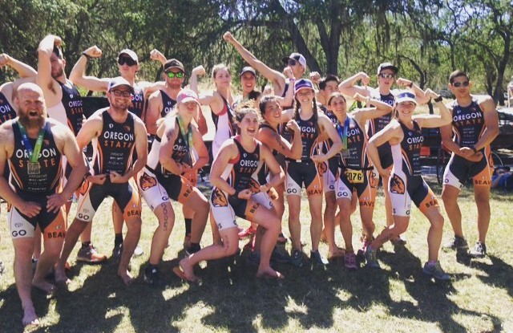

tri·ath·lon
an athletic contest consisting of three different events, typically swimming, cycling, and long-distance running.
by Colette Pruitt
The history of triathlon
Originated from France in the 1920’s. But for the US, Sept 25, 1974 is known as the birthdate of first triathlon event in the US. Located at Mission Bay, San Diego, CA, only 46 ppl competed in a 500 yd swim, 5 mi bike ride, and a 6 mi run. Jack Johnstone and Don Shanahan were members of the San Diego Track Club. They created and directed the race together. From there, more people started to take interest and the sport grew.
The history of IRONMAN
Originally there were three separate races – the Waikiki Rough Water Swim (2.4 mi), the Oahu Bike Race (112 miles), and the Honolulu Marathon (26.2 mi). In 1978, all three were combined and this was the start of the Hawaii Ironman, which was going to become one of the most famous triathlons in the world. It is now known as IRONMAN World Championship. You must earn your spot to race by being in the top portion of your age group or top 10 overall finishers. In 2017 there were over 2,400 racers. There is now the official Ironman brand which holds events all over the world. "More than 85,000 athletes registered to compete each year, representing over 90 countries, regions and territories" (Triathlon Magazine 2017).
{kind=link}
{kind=link}
{kind=link}
OSU Triathlon Club

The club is open for anyone to join, no matter the level of experience. Our main goal is to make triathlon accessible to everyone. We teach club members many aspects of the sport by holding educational clinics in topics such as nutrition, bike maintenance, and open water swimming. We host two triathlon fundraisers in the fall and spring. The money raised is used to allow us to partake in races around the country and buy items to enhance the club’s success. There are optional practices every day of the week for each sport. For fun we do team meals and social events to increase connectivity. We practice all year round, but race season is during Spring and Summer. Without the help from our wonderful coaches and sponsors, our team wouldn’t be nearly as successful.
Heart of the Valley
Location: Corvallis, OR
Directed by Best in the West Events, this is a local race that showcases the hidden beauty of Corvallis’s green rolling hills. HOTV signals the beginning of triathlon season and is a great determiner of your fitness levels. The swim is in an indoor 50m pool. The bike course has blocked intersections, wide bike lanes, and straight-forward signage to ensure nobody strays from the course. After the hard workout, racers enjoy a baked potato bar. This is a best race to do if you’re a novice.
Oregon Dunes
Location: Dunes City, OR
Another Best in the West Events race located on the coast of Dunes City/Florence. It’s an open water swim that encourages wetsuits. Out of all of their races, this course has the toughest bike portion because there are many short, steep, and surprising hills. After the bike, racers are sent onto a beautiful 5k trail run that reveals scenic views of the lake and sand dunes. The best part is running up a steep sand dune to the finish at the end.
Wildflower Triathlon Festival
Location: Lake San Antonio, CA
Known as “The Woodstock for triathlons”, Wildflower is a large triathlon festival with over 8000 racers and 8 different categories of events. Many people from other states and countries travel to this race because of the inclusivity and positive environment. Last year the event took a haitus because severe drought caused water levels to be too low, but for 2018 it was back in full swing. Many professional triathletes can be seen competing. There are so many volunteers on course that will cheer you on every mile. This is by far one of the most brutal races that will make you wish you had trained more. There is shopping, music, camping, and fun for the whole family. Many college teams travel to this race, so it’s a blast to meet other students participating in a sport we all love.
Pacific Crest Endurance Sports Festival
Location: Sunriver, OR
Another large endurance sports festival that had over 4000 racers and 12 different events is called Pacific Crest. It’s located in Sunriver, OR. It has an open water swim, a bike ride with rolling hills and views of Mt. Bachelor, and a brutal, sun-exposed run. Why Racing Events is the company that sets and directs this race. Sunriver is close to Bend so after your done racing, you can pop over to town and enjoy what Bend has to offer. Their long course is longer than a standard Ironman distance race, so they call it “Beastman” and they normally have impressive medals.
Best in the West Triathlon Festival
Location: Sweet Home, OR
Tri fest has more fun, activities, and spirit than some of the other triathlon festivals. The water is warm, the bike and run course are scenic. With over 2000 racers, it provides that family feel that other events cannot produce. This race is noticeably more organized and little details are pinned down to make the event run smoothly. It’s a fun three-day weekend of camping and racing with a western theme. All the volunteers happily cheer on racers, and signage is clear. Collegiate teams from neighboring states come to compete and there is a pasta dinner to meet other racers. Although this race signals the end of racing season, the season ends on a high note.

Best in the West Events
Best in the West Events is the local race event company that hosts 5 triathlons and 3 running events. It is run by the dynamic duo known as Blair and Staci who are both former members of the OSU Triathlon Club and are currently coaches and sponsors for the club. Blair is the owner and race director of BWE while Staci is operations manager, builder, marketer, and director. They put their heart and soul into every race and I’m humbled to be a part of their posse. We learn a lot of creative hacks and skills that can be transferrable to other aspects of life. We are a hardworking clan who not only loves to race, but loves to share the enjoyment and spirit of triathlon.